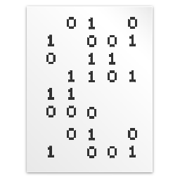
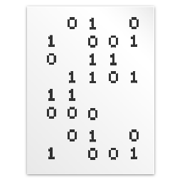
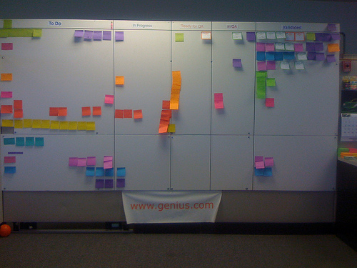

What is Scrum
Compared to the Hand that Wields it?
(retrospektiivi)
(C) Ilkka Laukkanen 2011
http://ilkka.github.com/otm2011
https://github.com/shacon/showoff/
Sisältö
- Suunnittelu
- Toteutus
- Palaverit
Suunnittelu
Työkalut

 

Storyja käsittelevä työkalu

Planning Poker
 (© Alan Dayley http://flickr.com/alandd)
(© Alan Dayley http://flickr.com/alandd)
Kanban board
 (© Drew Stephens, http://flickr.com/dinomite)
Burndown

Toteutus
Nakkien jako
- PBIt tehdään tärkeysjärjestyksessä
- ...ja yhdessä
- => Osaltaan ohjaamassa PBI-jakoa
Työtila
- Enemmän rauhaa
- ...mutta samalla enemmän sosiaalisuutta
Suunnittelijat
- Paremmin sovitut yhteistyötavat
- Parempi ymmärrys kumpienkin tarpeista
Organisaation tuki
- Erillinen scrum master
Palaverit
Aikatauluraami

Aikatauluraami
- Säännöllisyys
- Työrauha
- Ennustettavuus
Sprint review
- Aamulla
- Viikon alussa
- Sisältö pidettävä kurissa
- Kaikki uudet ideat suoraan PBIksi
Sprint planning
- Reviewin jälkeen
- Kesto pidettävä kurissa
- Ehkä jako brainstormaukseen ja tiimin plänäykseen
- Planning poker
Daily scrum
- Aamuisin
- Muttei liian aikaisin
- Taululla
Retrospektiivi
- Parin viikon välein
- Pari tuntia
- Projektin viikkopalaverin paikalla
Überscrum
- Kokonaan irrallaan muusta aikataulusta
- Demonstroidaan edellinen valmis tuotos
- Keskitytään ideointiin